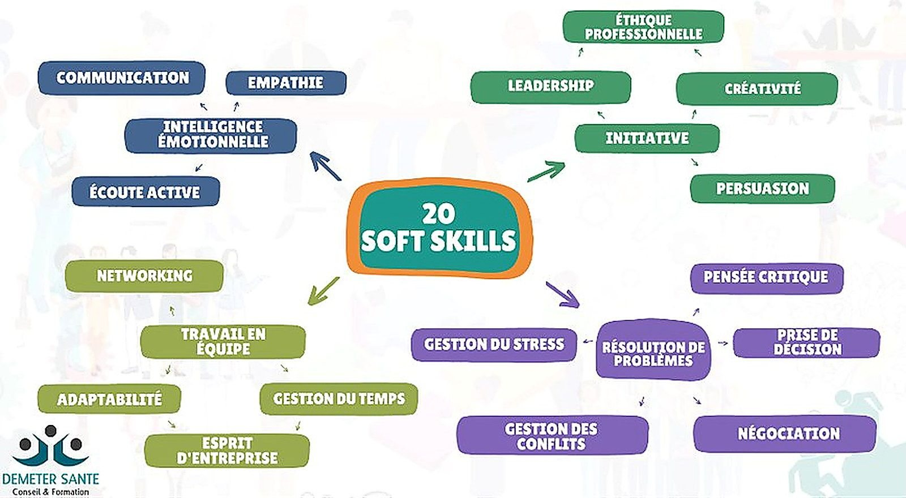

20soft skills travaillées
1auto-évaluation complète
Le contexte et la commande
- SAE individuelle du semestre 2, centrée sur la connaissance de soi et la posture professionnelle attendue sur le marché du travail.
- Point de départ : les compétences comportementales les plus recherchées par les recruteurs, aujourd’hui déterminantes à diplôme équivalent.
La problématique
Comment identifier ses qualités individuelles, connaître ses limites et construire une posture professionnelle crédible face aux attentes des recruteurs ?
La démarche
- Travail sur les vingt soft skills les plus attendues sur le marché du travail actuel.
- Autocritique structurée : connaissances, capacités, adaptabilité à un milieu, capacité d’intégration et limites personnelles.
- Mise en relation de ces qualités avec la compétence « piloter les relations avec les parties prenantes ».

Ce que j’en retire
- L’autocritique est le point de départ de toute progression, sur le plan professionnel comme personnel.
- Une posture professionnelle se construit : elle se travaille, s’observe et s’ajuste au contexte.
Ce que j’ai produit
- Cartographie des vingt soft skills et positionnement personnel sur chacune d’elles.
- Auto-évaluation structurée : connaissances, capacités, adaptabilité à un milieu, capacité d’intégration et limites identifiées.
- Mise en relation de ces qualités avec la compétence « piloter les relations avec les parties prenantes ».
Ce que j’en retire
- L’autocritique est le point de départ de toute progression, professionnelle comme personnelle.
- Une posture professionnelle se construit : elle s’observe, se travaille et s’ajuste au contexte.
- Savoir nommer ses qualités et ses limites est un atout en entretien de recrutement.
Outils et méthodes mobilisés
Auto-évaluationRéférentiel soft skillsRetour d’expérience